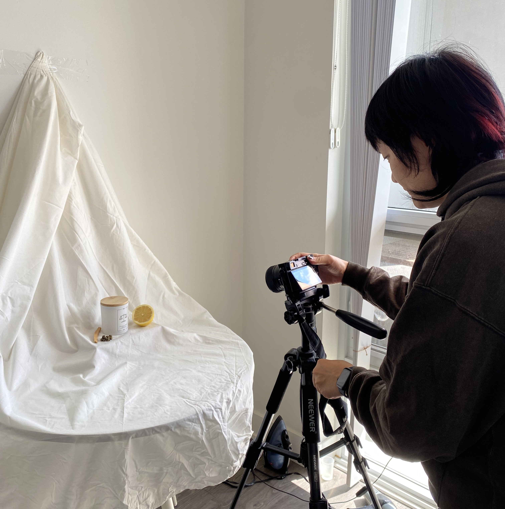
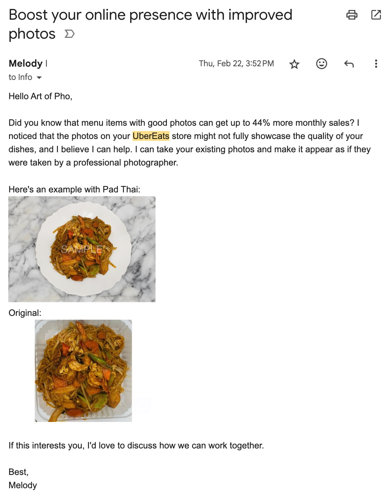
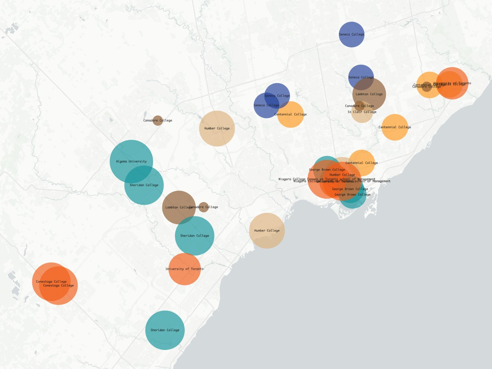
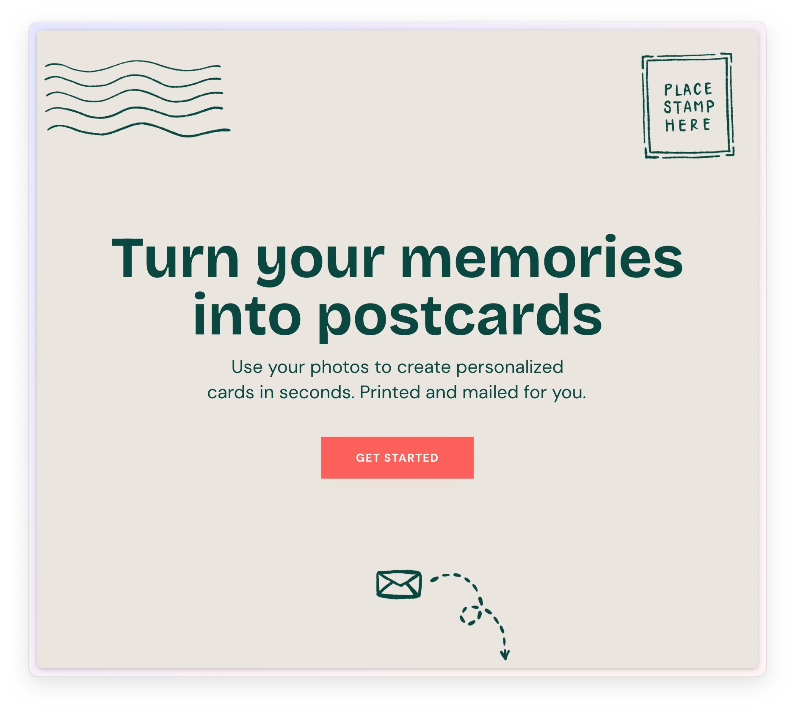
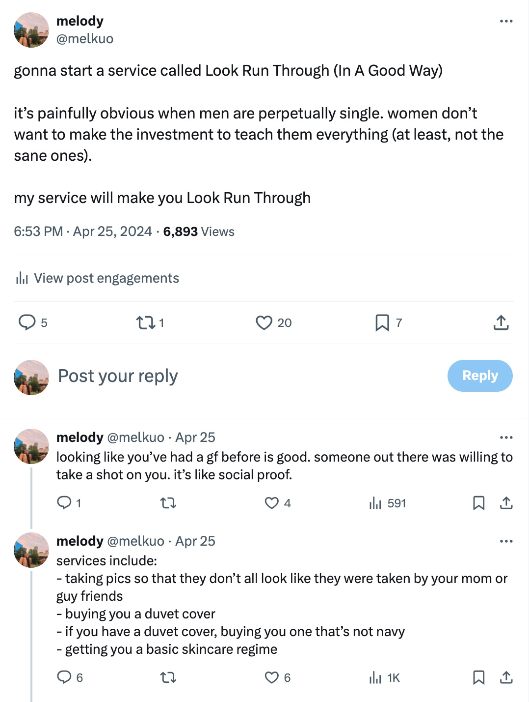
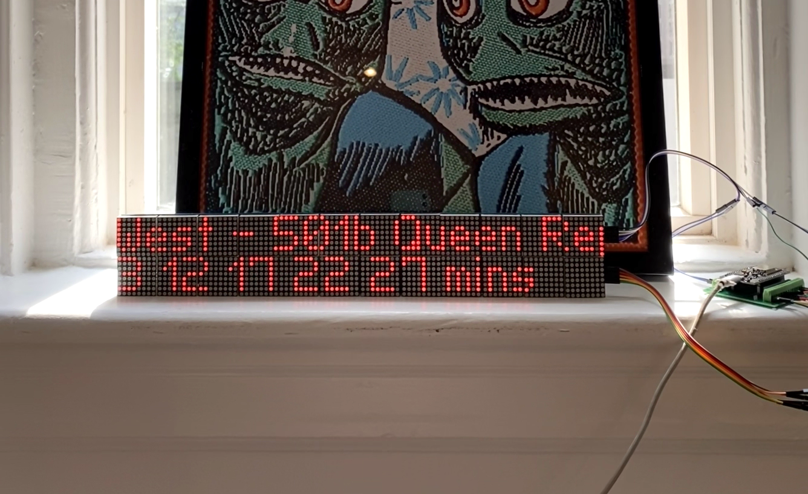

This year, I set out on an exploration, a sabbatical where I could explore my every curiosity. It's halfway through the year, so I wanted to reflect on the things I’ve worked on and learnt along the way.
The primary motivation was to tinker on things I thought would be interesting. It would be nice if I could make money doing it, but interest was always a prerequisite. In other words, I would work on things that I thought were interesting with no expectation of making money; I would not work on things that I thought were good business ideas if I didn't think I'd enjoy it.
I have had the idea for the longest time to make astrology‑themed candles. The pitch is simple: people love horoscopes, people love candles, thus, horoscope candles. Existing offerings were overdone and gauche. It seemed like a good business idea.
The vision was to make beautifully designed, astrology‑themed candles. Twelve candles with twelve unique scents, fitting to the sign. I would test this by setting up a Shopify store and running some ads to test product‑market fit and funnel conversions. I had never made candles or done D2C before, but I thought it would be interesting to learn about e‑commerce.
I made a business plan and calculated unit economics. I bought scent samples and matched them to a sign. I designed labels and set up a Shopify store. I would show the site to strangers in cafes to get their thoughts. I even had a friend with a camera do a photoshoot in my apartment.
Then at some point I just… lost interest? Part of it was because other ideas came up that pulled my curiosity. Part of it was realizing that the hardest part of all of this would be selling it and competing for buyer attention. And as it was nearing the end of March, part of it was realizing I was about to enter the worst time of year for buying candles.
I sold a few to a few family members but never officially “launched” the thing. If I had wanted to pursue it further, I would have bought Instagram ads as a way to test product‑market fit.
A piece of advice you’ll read about starting a business is to double down on the areas that you already have experience in, rather than starting fresh in a new domain you have no knowledge about. I had most recently worked at a company helping restaurateurs manage their online delivery platforms. One of the new products I was working on before I left was using AI to improve menu item photos. It seemed like a good idea to continue tinkering on this.
The vision was a way for any restauranteur to create beautiful photos of their menu items. I would test this by finding existing restaurants with bad photos on UberEats, manually improve them, and share them with them to see if they’d be interested. I had minimal experience with Photoshop, but I thought it would be fun to play around with new AI image tools.
I outreached ~10 restaurants with something like this:
I received no replies. There could have been many reasons for this – too small of a sample size, cold emails could have been better, photos could have been improved. If I wanted to pursue it further I could have tested all of these.
But I didn’t like working in Photoshop all day. I also knew it would be a tough business – restauranteurs are extremely busy and difficult to get a hold of, and their margins are razor thin. So I put the idea to rest.
I am a total urbanist nerd. I love learning about housing, transportation, urban planning, and cities.
A big issue facing Toronto (and Canada) right now is the high cost of housing. I was a big lurker in local advocacy groups like More Neighbours that pushes for more housing to be built.
I wanted to find ways to contribute to the discourse and create things in the space. I did this in two ways:
First, there was public data breaking down international student permits by university campus. The federal and provincial governments have received a lot of criticism for the astronomical growth of international students post‑pandemic, leading to undue stress on housing and social services.
I wanted to visualize which communities may have been impacted the hardest by this. I created a basic visualization using Kepler (having never used Kepler before). I posted it on my website and summarized some findings on Twitter.
[Twitter]
It didn’t get much engagement. I wasn’t surprised as my Twitter followers aren’t the primary audience for this kind of content. But I did enjoy making it and this visualization did help in part to convince my mom not to buy a pre-construction condo at one of these international student hotspots.
Another thing I did was write a Substack article about my experience looking into buying a home in Toronto. I was following the real estate market closely at the time, thinking it would be an opportune time to buy, only to feel defeated at the state of the market. I wrote about my frustrations for the younger generations.
I published the article and posted it on my Twitter. The article got a few dozen views, again, likely low due to wrong fit for my followers.
Writing about this now, it’s clear to me that I really enjoy this space and I should continue to explore it, writing or otherwise. A clear gap is that I have to find the right audience for my work. One way I could do this is by participating more in housing discourse online, or trying to meet more people in the space.
I get a lot of wedding invites in the mail, and I really love receiving these small surprises. Around the same time, my friend N turned photos from her trip into custom postcards. I looked into existing ways to send custom cards and the designs were all lame and cheesy. I had this idea to take this existing business and refresh it for a younger audience with trendier designs.
The vision was to make it super easy to send beautiful cards to others. Upload a photo, choose from a few templated designs, and it’s automatically printed and mailed for you.
I created a web app entirely using no code tools (having never used these tools before). I finished the first version of it in a couple days and started showing it to some friends for feedback. It took me about a month and a lot of back‑and‑forth to find a supplier that would print cards to the quality I wanted.
I announced it on Twitter and to my surprise it got a lot of traction! Thousands of impressions, people were trying the product and some were even paying for it.
[Twitter]
Because these are low-priced items (<$10/card), I knew I would have to keep customer acquisition costs down in order to make this into a sustainable business.
I tried a couple of things to grow the product organically: I created an Instagram account to post content, I started email marketing campaigns, I printed out posters and stuck them up in tourist-heavy photo spots. I also explored the B2B angle: I partnered with some friends running their own businesses to send Posties out to their customers after events they hosted, and I cold outreached people on Luma hosting events to see if they wanted to do the same.
I was hoping to see some signals of organic growth, but didn’t. While people loved receiving nicer and more personalized cards, the difficulty was in finding people who wanted to send cards, didn’t need them right away, and had a good photo to use.
To be fair, all these efforts were only small attempts and each could have been pursued more earnestly. But I realized I was putting in a lot of effort to make a dollar. If I was going to put in this amount of effort, I wanted to be making more money. So I decided to put a pause on it.
I had the idea for a funny tweet one day. I shared it out on a whim:
[Twitter]
A lot of people complimented me on it and I even had a few strangers DM me for dating advice.
So I put together a Notion page where I laid out some recommendations for things to buy to help guys look obviously not single. There was no vision, I just did it for fun. I set up the product recommendations with Amazon affiliate links (first time doing so).
I woke up the next morning and discovered I had made $5. I was elated. It felt like I had discovered some secret world of making money. But of course, once your content stops getting views, you’ll stop making money as well, so that quickly tapered.
If I wanted to take this further, I would have to figure out how to make this content more permanently discoverable. But this was all done in jest so I never considered pursuing any of this seriously.
Sometimes I take the bus home from my co‑working space. It annoys me to no end when I just miss the bus and have to wait 10‑15 minutes for the next one.
At the transit shelters, there are these LED display boards that tell you when the next vehicle will arrive. I thought that if I had this exact same thing inside my co-working space, then I could optimize when I left.
I had taken an electrical course in university many years ago. I relearned how to program a a microcontroller, did some research and bought some parts. I ran into some snags like realizing that I would need to solder my LEDs together. My friend A leant me a soldering iron and I relearned how to solder as well.
I finished my display board and shared it on Twitter. It got some good engagement and connected me with some people in real life building cool electrical projects.
[Twitter]
I shared instructions on how to recreate the entire thing on Github. I set up the parts with affiliate links as well. No purchase conversions yet, but I didn't expect anything out of this anyways.
That was the first half of the year, so, how am I thinking about the next half?